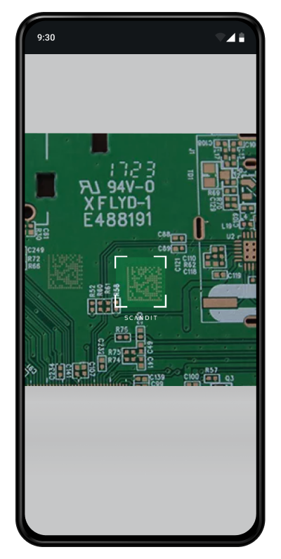

Best Practices for Usability
Selecting the Right Modality for your Use Case
Scanning using the smartphone offers users a familiar paradigm of taking a photo or recording a video. Using a smartphone confers ergonomic and usability benefits over laser scanners, allows for bring-your-own-device roll-outs, and can offer a total cost of ownership advantage.
Additionally, scanning multiple codes at once while displaying information with AR opens up exciting new use cases previously not possible with laser scanners.
However, there are important points to consider, especially when modifying a workflow that previously relied on a laser scanner for input.
Choosing the right scanning modality for your use case and physical set-up, and implementing the appropriate interactions, are critical factors that will determine the overall usability and the resulting user adoption of your app.
At the core, there are basic principles of design that apply to all scanning interactions: starting the camera, assisting with aiming and providing strong and clear feedback. Beyond the basics, decisions must be made about how and where to display results, indicate progress, when to pause between scans vs. when to keep the scanner running.
The following paragraphs provide you with core considerations for Single Scanning and Multiple Code Scanning (MatrixScan), as well as detailed guidance for sub-patterns of each.
This guidance will help you make the right choices for your workflow and physical set-up.
Core Pattern for Single Scanning
Starting the camera
Tapping the entire camera interface to start/resume scanning is the most ergonomic approach.
If button is preferred, make touch area large enough for comfortable repeated use.
Assist with aiming
A viewfinder communicates that scanning is live and helps indicate how far to hold camera.
Restricting the scan area can help with very tough codes or on low end devices.
Indicate the inactive area with a darkened overlay.
Do not over-restrict the area, as user will feel like they’re scanning through a keyhole and may required the user to align barcodes.
See additional guidance under Avoiding Unintentional Scans
Provide feedback
Draw a brush overlay at the location of the detected barcode, clearly confirming to the user that the intended item was scanned.
Play sound, vibrate and/or haptic feedback on capture.
Pausing between scans
Pause by putting camera in standby mode when there are tasks or downtime between scans.
Pause if leaving scanner running will result in unintentional scans.
Hide viewfinder, show persistent overlay and guidance for how to resume scanning.
Use continuous scanning when
Leaving the camera running will not result in unintentional scans.
There are no interrupting tasks or downtime between scans.
Repeated tapping to resume would be burdensome (e.g., when you have a large number of items to scan sequentially).
Consider providing a “Hold to Scan” interaction to make scanning action explicitly controlled by the user.
Time out when idle
Set a timeout after some seconds without scan to conserve battery.
Provide guidance for how to resume scanning.
Avoiding Unintentional Scans
There can be a number of reasons that our scanner “scans too fast”. The strategy for avoiding unintentional scans depends on your use case and physical setup.
Firstly, it should go without saying:
Only run the scanner when you intend to be scanning!
Where possible, avoid unwanted barcodes programmatically by
Enabling only the symbology you need
Restricting barcode Active Symbol Count
If it’s not possible to select codes programmatically, then
Pause between scans when information input is needed, or other actions are required. Showing persistent feedback will help the user feel in control.
Restricting the scan area can be helpful to preventing unwanted scans (at the expense of scan speed).
Indicate the inactive area by dimming the area outside of the viewfinder.
Do not over-restrict the area, as user will feel like they’re scanning through a keyhole and may have trouble aligning long codes.
Use Aimer or Laser viewfinder combined with Radius Location Selection.
Note
Scan area and viewfinders are not “connected” in the Scandit SDK. It is possible to set a scan area that does not match the viewfinder.
Avoiding Unintentional Scans using Barcode Selection
Consider Barcode Selection when accuracy is more important than speed, and when barcodes are so crowded that restricting the scan area will compromise usability.
Aim to Select allows you to select one barcode at a time using an aimer, and tapping to confirm the selection. It is especially convenient for one-handed operation.
Tap to select is quicker when you need to select several barcodes. Selection can be done by tapping on highlighted barcodes in the live camera preview, or on a frozen screen. Tapping on codes while keeping the smartphone steady can be tricky, and freezing the screen allows for ergonomic use.
Aim to Select when codes are crowded. |
Aim to Select during Stock Count. |
Tap to Select used in a sequential workflow when checking in a part. |
Look up or Verify Info
Example Use Cases:
Product Info Lookup, Clienteling, ID Scanning, Age Verification
Assist with aiming
A viewfinder helps to indicate scanning distance / barcode positioning.
A viewfinder helps to communicate whether the scanning is live.
Provide feedback
Draw a brush overlay at the location of the detected barcode, clearly confirming to the user that the intended item was scanned.
Sound, vibrate or haptic feedback on capture.
Show result
Show result in split view or on a new screen, depending on next steps / amount of info that needs to be displayed.
Viewfinder helps user aim and indicates that scanning is live. Camera is in standby following a scan. Detailed product information is shown in full screen. User can dismiss the product card to resume scanning. |
Product information is shown as a card at the bottom. User can tap anywhere on the paused screen to resume scanning. |
User sees guidance to indicate which side to show. Camera is in standby as parsed information is shown in full screen. |
Adding items to cart/list
Example Use Cases:
Self-Scanning, mPOS, Stock Take, Gap Scanning
Starting the camera
Tapping the entire camera interface to start/resume scanning is the most ergonomic approach.
If button is preferred, make touch area large enough for comfortable repeated use.
Assist with aiming
Size of viewfinder helps indicate how far to hold camera from barcode.
Viewfinder animation communicates that scanning is live.
Pausing upon scan
Pause if there’s a task in between scans (e.g., entering quantity of SKU during a Stock Take, walk to find the next item during Self-Scanning).
Pause between scans if leaving scanner running will result in unintentional scans.
Provide feedback
Draw a brush overlay at the location of the detected barcode, clearly confirming to the user that the intended item was scanned.
Sound, vibrate or haptic feedback on capture.
Show result
Add most recently scanned item on top and push down previous items.
Show item in split view. Allow user to toggle quantity or remove item.
Items are added to the list, and camera is paused between scans, preserving battery and allowing customer to find their next item. Item is added to the top of the list with the quantity toggle expanded.. |
Because codes are tiny, barcode selection is used to ensure correct item is scanned. On scan, camera is put in standby mode while keyboard input is active. |
When there are too many packages to scan, running the scanner continuously may be preferable. Using a hold to scan interaction can help to make scanning action explicitly controlled by the user. |
Scanning Items off a List
Example Use Cases:
Van Loading, Receiving, Pickup/Dropoff, Proof of Delivery, Order Picking
Starting the camera
Make touch area large enough for comfortable repeated use.
Consider allowing tapping the entire camera interface to start / resume scanning.
Assist with aiming using a viewfinder
Size of viewfinder helps indicate how far to hold camera from barcode.
Viewfinder animation communicates that scanning is live.
When to pause between scans / when to scan continuously
Pause when there’s a task in between scans (e.g., load a package into the delivery truck, walk to find the next item during In-store Picking).
Run continuously when all of the items require scanning, and no data entry for individual items is required.
Run continuously, when you are confident that the camera can run without picking up stray barcodes.
Provide feedback
Draw a brush overlay at the location of the detected barcode, clearly confirming to the user that the intended item was scanned.
Sound, vibrate or haptic feedback on capture.
Consider voice-out feedback (e.g., quantity to pick, truck shelf based on routing).
Show result
Show tangible information to end users rather than just the numeric value of barcodes.
Show advance against progress indicator on the scan screen.
Show tick mark against item in list, or move to list of items already scanned.
Here, user toggles between list and camera view for each scan. The return to the list should be delayed slightly, long enough for the barcode overlay to be visible. If the camera is closed too fast, it will be disorienting for the user. |
User can scroll through picklist in a split view. Items are checked off the list and pushed down upon scan. This works well for cases where the list is relatively short and limited information per item is shown. |
User does not need to see the list because it does not contain human-readable/useful information. Voice command feedback may allow the user to operate without needing to look at the screen. |
Ordered Picklist
Example Use Cases:
In-store Order Picking
Use a split view
Show camera preview on top and next item to pick in a split view.
Allow user to tap the entire camera preview to start / resume scanning.
Assist with aiming
Size of viewfinder helps indicate how far to hold camera from barcode.
Viewfinder animation communicates that scanning is live.
Pause between scans
Pause after a bin scan to allow the user to walk to find the next item.
If the user scanned an incorrect item (e.g., item doesn’t belong to pick list, item not found) do not pause.
Provide feedback
Draw a brush overlay at the location of the detected barcode, clearly confirming to the user that the intended item was scanned.
Sound, vibrate or haptic feedback on capture.
Consider voice-out feedback (e.g., quantity to pick)
Show result
Show advance against progress indicator on the scan screen.
Search and Find using MatrixScan
Example Use Cases:
Pickup/Dropoff, Back room search, Destaging for Curbside Pickup
Assist with aiming
If possible, use full screen.
Consider whether supporting landscape mode (as default or alternative) makes sense for your physical layout.
Show result
Show detected state for non-target codes.
Show found state and audio feedback for target codes.
Show progress against indicator if searching for multiple codes.
For single codes, consider freezing the screen upon finding the target code.
Information Lookup, Comparison and Sorting using MatrixScan AR
Example Use Cases:
Couponing, Product Comparison, Van Loading
Assist with aiming
If possible, use full screen
Consider whether supporting landscape mode (as default or alternative) makes sense for your physical layout
Show result at two levels
Support customer decision-making but resist overloading AR icons with info.
Consider adding filtering options (e.g. for food allergies, health score, store associate tasks).
Use color in addition to icons to allow for sorting, comparison, status or identification.
Size AR icons proportionally to quantity of barcodes on screen, distance from object.
Interaction / actions using AR
Allow user to freeze screen (via button or gesture) for easier interaction with AR icons.
Do not place buttons or actions in the overlays - rather, bring up further information on a static card

{kind=link}
{kind=link}
{kind=link}
{kind=link}
{kind=link}
{kind=link}
Counting and Receiving Using MatrixScan Count
MatrixScan Count is an out of the box solution for counting and receiving multiple items at once, in which UI elements and interactions are built into a workflow. MatrixScan Count is implemented through functionality provided by BarcodeCount.
UI Pattern for Camera view
MatrixScan Count leans on the familiar paradigm of a camera, including a shutter button that the user operates in order to initiate scanning.
User is guided on how to scan and how far to stand when scanning
User is initially guided to “Tap shutter to scan items”.
A loading indicator is present for a split second indicating to hold still while scanning is in progress.
An initial calibration may be triggered if the user stands too far or too close from the items.
Feedback is overlaid as AR icons on top of scanned barcodes, via button counter badge and via progress indicator
AR icons that track with barcodes in the live view, provide confirmation of scan. Additionally, AR icons can be used to indicate codes that are unscannable, or items that should not be present.
After the first scan, a list icon with counter badge showing the total scans appears. The counter badge is used alone when building a list, or together with the progress indicator when scanning against a list of expected codes.
Finishing the process
Upon completing the scanning process, advance the user to the next step automatically if all items have been successfully scanned.
Next steps may be reviewing the scan list to identify items that shouldn’t be present, or if none detected, simply finalizing order receipt or moving on to the next order.
Our MatrixScan Count Sample shows proposed UI for handling a list of scanned items.
Special Topic: Accessibility and Understandability
Allow placement of touch targets centrally, or allow moving for left-handed users via the settings menu.
Consider ergonomics and ability to reach touch targets when smartphone is used in combination with a hand strap
Up to 8% of male users are colorblind. Consider alternatives to green / red feedback to communicate state.
Use labels and notifications in addition to color or icons.
Provide guidance up front for first time users, or contextually when users struggle.
Scandit-provided Viewfinders
The SDK provides several types of viewfinders available out of the box, with several that include style variations.
ID Scanning viewfinders
Viewfinders communicate that the scanner is active, tell the user where within the view scanning occurs, and generally communicate how close to hold the camera.
The Rectangular Viewfinder can be adapted to expected barcode size, and the style can be modified depending on branding preference.
The Rectangular Viewfinder comes in two Styles
Square
Rounded
For each style, a Line Style can be further specified
Light
Bold
If scan area is restricted, the outside of the viewfinder can be dimmed.
|  | ||
Square, bold rectangular viewfinder with full-screen scanning. |
Rounded, light rectangular viewfinder with restricted area scanning. |
Square, light rectangular viewfinder with restricted area scanning. |
The Aimer and Laser Viewfinders should be used when scanning is restricted to a location that aligns with the center of the viewfinder.
The Aimer Viewfinder is available by default in Barcode Selection, or can be used independently, such as when scanning small codes.
The Laser Viewfinder leads the users to orient phone to align with the barcode. It is not recommended for scenarios where expected barcodes are in mixed orientation.
{kind=link}
{kind=link}
ID Capture viewfinders are enabled by default, depending on which scanning mode is enabled. The viewfinder contains user guidance via text and asset to help user scan the correct side.
The style can be modified depending on branding preference.
The ID Capture Viewfinders have distinct UI depending on the capture modality used:
Front of Card
MRZ for Passport and ID card scanning
Back of Card for US Driver’s license
The ID Capture Viewfinders come in two styles,
Rounded
Square
The ID Capture Viewfinders Line Style can be set to,
Bold
Light
Rounded, Light style viewfinder for front of card scanning. |
Square, Bold style viewfinder for back of driver’s license scanning. |
Square, Bold style viewfinder for MRZ scanning. |